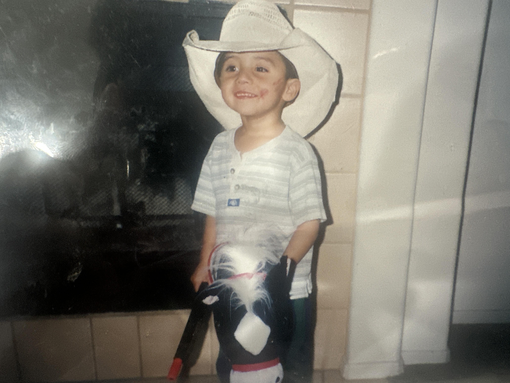
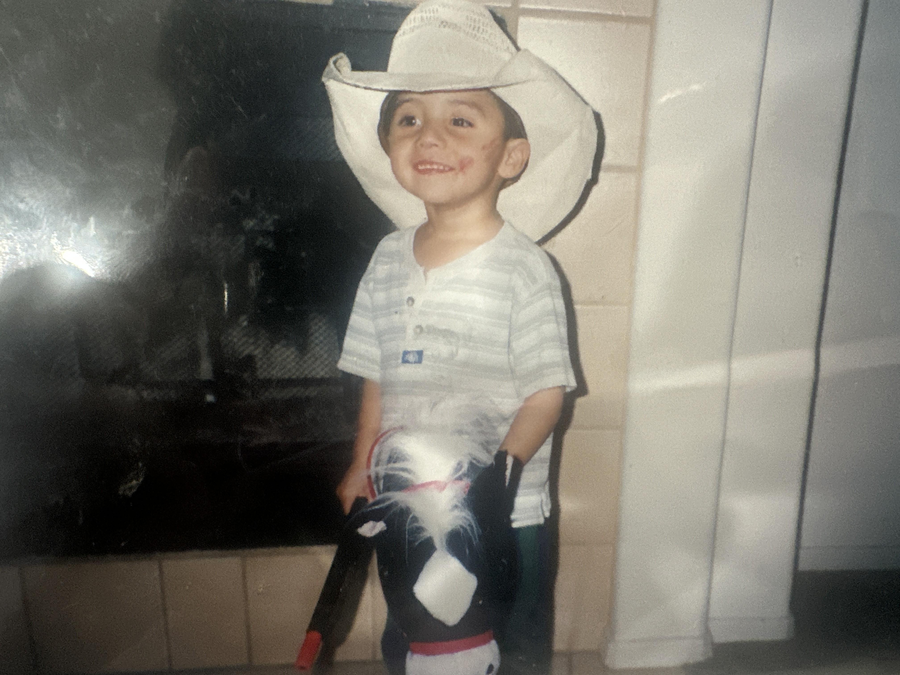

Favorites
🎵 Music
Okay now this one gets a little crazy. I am an emo/punk rock man at heart.
Obviously we start with the emo triad and the corner.
Fall out Boy, Panic! at the Disco, and My Chemical Romance (Corner is 21 Pilots)
Next on the List is The Strokes. If you like The Strokes marriage is right around the corner.
I Love a lot of these kinds of bands. The Strokes is #1 in my heart 🖤
🎬 Movies
Meet Joe Black, Martyrs, Ghost Rider, Reservoir Dogs, Inglourious Basterds, The Conjuring (1 & 2), Avengers Infinity War + Endgame, A Clockwork Orange
🎥 Directors
Stanley Kubrick & Quentin Feetantino
🎮 Games
The Witcher 3, Cyberpunk 2077, Red Dead Revolver